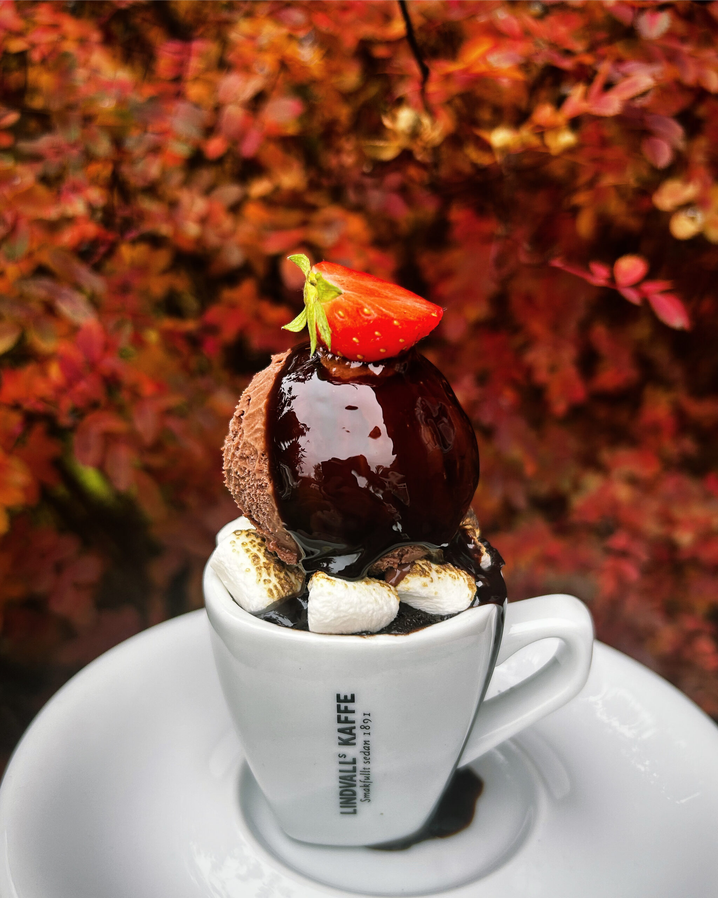
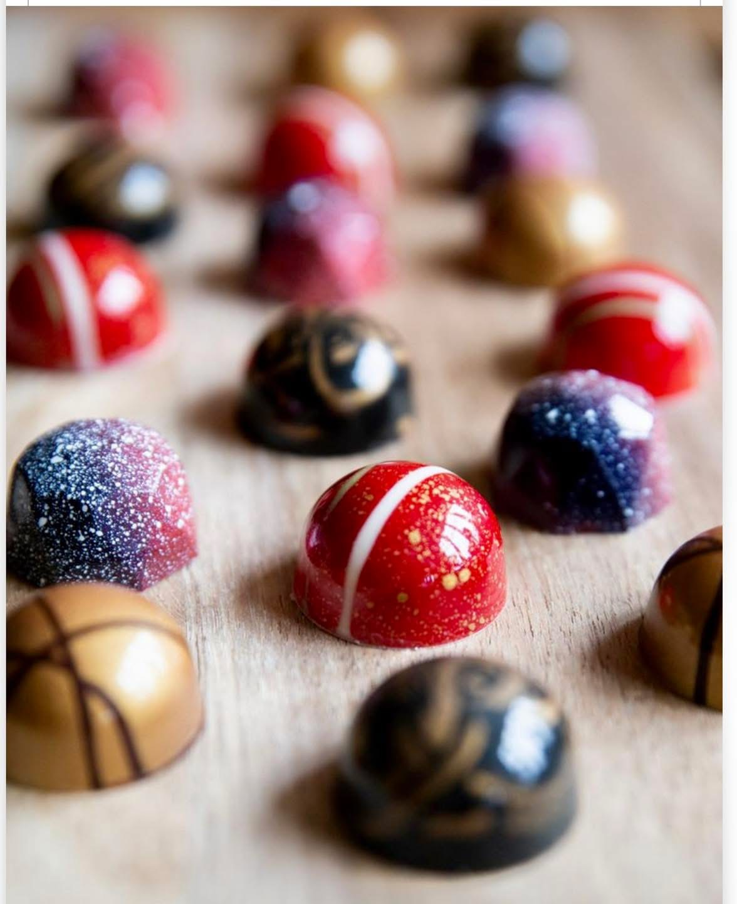
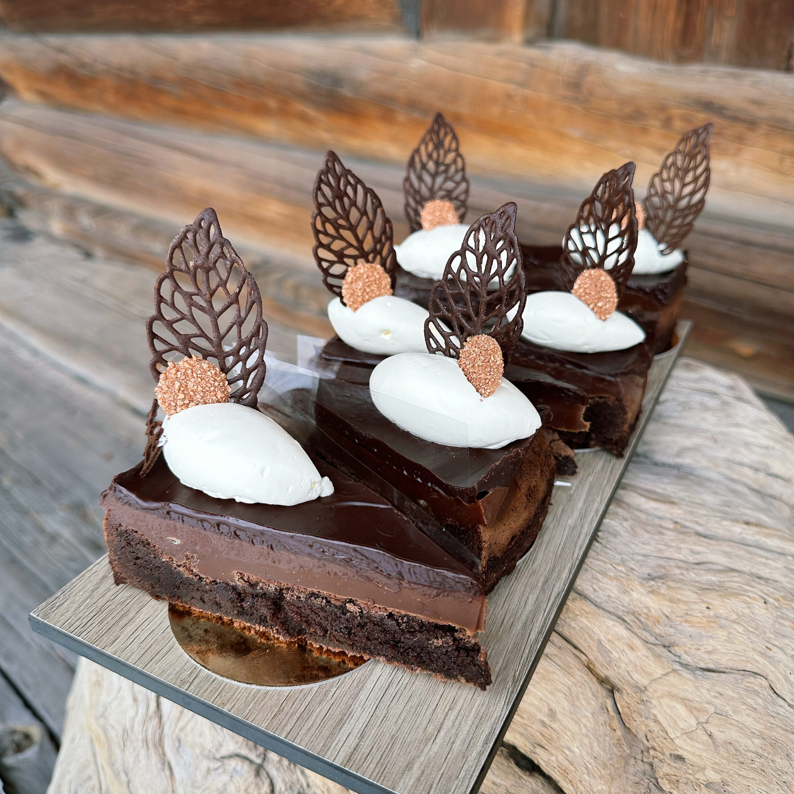
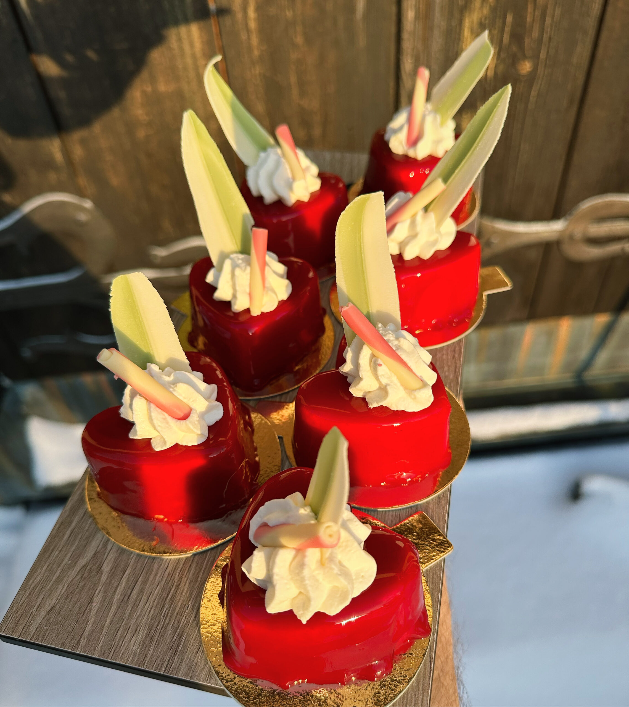

Dagens kött
Omsorgsfullt lagad med säsongens råvaror.
CAFÉ · LUNCH · BAGERI · MORA
I Emma och Anders Zorns gamla stall möts genuin matlagning, lekfullt fika och varm gästfrihet.

BAKAT & LAGAT
SÄSONGENSEN PLATS MED HISTORIA
Bara ett stenkast från Mora centrum väntar en lugn och mysig atmosfär med utsikt över Zorngården, kyrkan och sekelskifteshusen.
Caféet drivs sedan sommaren 2023 av Scott Ferguson. Tillsammans med sitt team utvecklar han Zorncaféet med omtanke, glädje och genuin matlagning i fokus.

DET GODAEN GLIMT AV CAFÉ ZORN
Se miljön, hantverket och känslan i den gamla stallängan vid Zorngården – en plats skapad för goda smaker och varma möten.
Planera ditt besök
FIKA ATT MINNAS
När blicken landar på vår kylmonter börjar upplevelsen. Klassiska favoriter samsas med nya, oväntade smaker – alltid skapade på plats och på vårt eget vis.
Kom förbi idagMER ÄN ETT CAFÉ
En helkväll med en meny skräddarsydd efter sällskap, behov och smaker.
Vällagad och energigivande mat som passar ert möte och schema.
Säsongens bästa smaker signerade Scott Ferguson – även veganskt.
Dop, födelsedag eller fest – vi hjälper gärna till med mat och upplägg.
MåndagStängt
Tisdag10.00–16.00
Onsdag10.00–16.00
Torsdag10.00–16.00
Fredag10.00–16.00
Lördag10.00–17.00
Söndag10.00–16.00